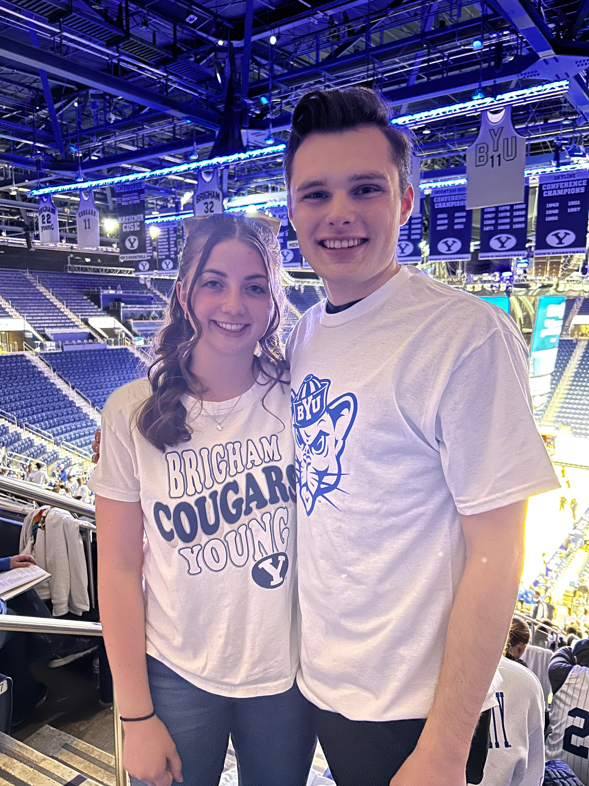

Adjusting to College Life
While college life has been super fun, engaging, and exciting, it was a little difficult to adjust to it. There's a lot of changes that happen during the transition from living at home to being on your own and taking college classes. This video was a helpful resource for me as I prepared to come to BYU.
A good way to prepare for college is to work hard during high school so that you can have a strong application. Below are the ACT scores for prospective college students from 2016-2025.

The Social Scene
- One of the best ways to socialize and interact with people is within your YSA ward. Callings and ministering assignments are a great opportunity to serve others and get to know people.
- Another fun way to get to know people at BYU is by attending Clubs Night! My first week here, I went swing dancing, and absolutely loved it! I've gone to several swing dance clubs and even taken a swing dance class since. Swing dancing is one of countless fun and unique activities that BYU offers to its students.
- Some of the most fun I've had at BYU is attending sports games. Football, men's basketball, women's volleyball, gymnastics, and other sports are so fun to watch. The ROC environment is exhilarating to be a part of. The students are happy and high energy!

A Dual Heritage
- In the BYU mission statement, it says that "a BYU education should be"...
-
- Spiritually strengthening
- Intellectually enlarging
- Character building
- Leading to lifelong learning and service